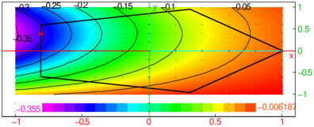

17.1.2 Graph and geometric objects attributes
There are two kinds of attributes for graphs and geometric objects:
global attributes of a graphic scene and individual attributes for
the specific geometric objects in the scene.
Individual attributes
Graphic attributes are optional arguments of the form
display=value. They must be given as the last
argument of a graphic instruction. Attributes are ordered in several
categories: color, point shape, point width, line style, line
thickness, legend value, position and presence. In addition, surfaces
may be filled or not, 3D surfaces may be filled with a texture, 3D
objects may also have properties with respect to the light.
Attributes of different categories may be combined with +, e.g. in:
| plotfunc(x^2+y^2,[x,y],display=red+line_width_3+filled) |
The graphic attributes are:
-
Color
- which is set with display=value or
color=value. The values can be:
-
black, white, red, blue, green,
magenta, cyan, yellow,
brown, purple, orange, or grey.
- a numeric value between 0 and 255,
- a numeric value between 256 and 256+7· 16+14 for a color of the
rainbow,
- any other numeric value smaller than 65535 (the rendering
is however not guaranteed to be portable).
- Point shape
- which is set with display=value, where
value can be one of:
rhombus_point, plus_point,
square_point, cross_point,
triangle_point, star_point,
point_point or invisible_point.
- Point width
- which is set with display=value.
The values can be:
point_width_n where n is an
integer between 1 and 7.
- Line thickness
- which is set with thickness=n
or display=line_width_n where n is an
integer between 1 and 7.
- Line shape
- which is set with display=value,
where value can be one of:
dash_line, solid_line,
dashdot_line, dashdotdot_line,
cap_flat_line, cap_square_line or
cap_round_line.
- Legend
- where the text is set with
legend="legendname" and
the position is set with display=value,
where value is quadrantn for some
n∈{1,2,3,4}.
These values correspond to the position of the legend of the object
(using the trigonometric plane conventions).
The legend is not displayed if the attribute
display=hidden_name is added.
- Filling
- which is set with display=filled.
- Image texture
-
which is set gl_texture="picture_filename" and
fills a surface with a texture. See the interface manual for a more
complete description and for gl_material
options.
Examples
(See Section 24.9.3, Section 24.5.2,
Section 24.3.3 and Section 24.6.3 for information on
the commands used.)
| polygon(-1,-i,1,2*i,legend="P") |
| point(1+i,legend="hello") |
| color(segment(0,1+i),red) |
By entering
we get the same result as above.
Global attributes
The following attributes are shared by all objects of the same scene:
-
title="titlename" sets the title.
- labels=["xname","yname","zname"] sets
names of the x,y,z axes.
- gl_x_axis_name="xname",
gl_y_axis_name="yname",
gl_z_axis_name="zname" sets the names of the axes
individually.
- legend=["xunit","yunit","zunit"] sets
units for the axes.
- gl_x_axis_unit="xunit",
gl_y_axis_unit="yunit",
gl_z_axis_unit="zunit" sets units for the axes
individually.
- axes=true or axes=false (or axes=0) shows or hides the axes.
- gl_texture="filename" sets the background
image to filename.
- gl_x=xmin..xmax,
gl_y=ymin..ymax,
gl_z=zmin..zmax sets the graphic configuration
(do not use for interactive scenes)
- gl_xtick=xmark,
gl_ytick=ymark, gl_ztick=zmark
sets the tick marks for the axes.
- gl_shownames=true or gl_shownames=false
shows or hides objects names
- gl_rotation=[x,y,z] defines the rotation axis
for the animation rotation of 3D scenes.
- gl_quaternion=[x,y,z,t] defines the quaternion
for the visualization in 3D scenes (do not use for interactive
scenes).
- a few other OpenGL light configuration options are
available but not described here.
Examples
| title="median_line";triangle(-1-i,1,1+i);median_line(-1-i,1,1+i);
median_line(1,-1-i,1+i);median_line(1+i,1,-1-i) |

| labels=["u","v"];plotfunc(u+1,u) |